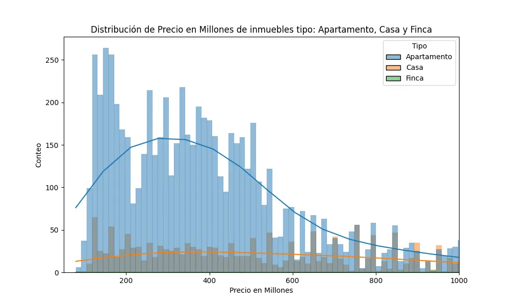

Python · Machine learning
Visualizing the Housing Market in Bogotá with Python
Discover Bogotá's housing market with our Python-powered data visualizations. With added machine learning, we unveil key trends and insights, offering valuable information for buyers, sellers, and industry professionals.